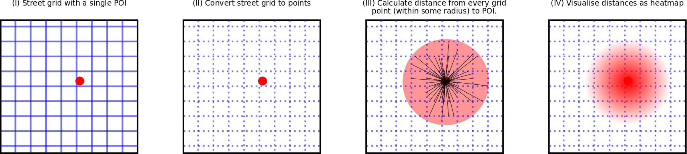
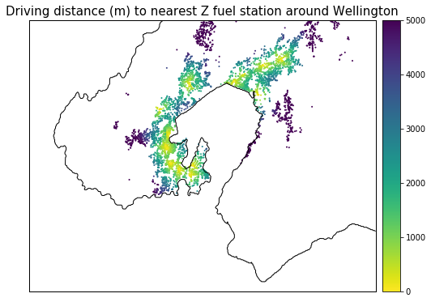
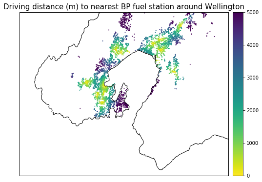
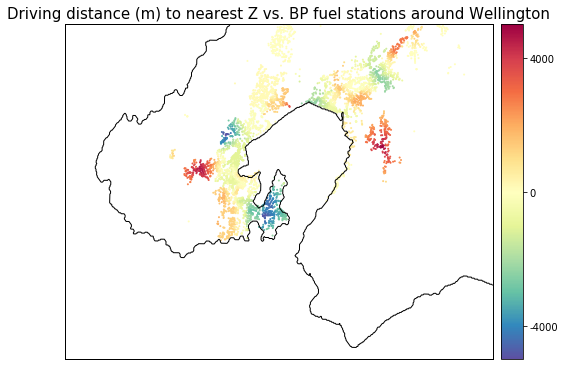
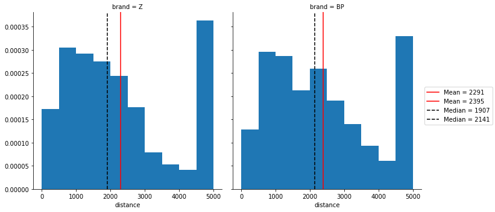
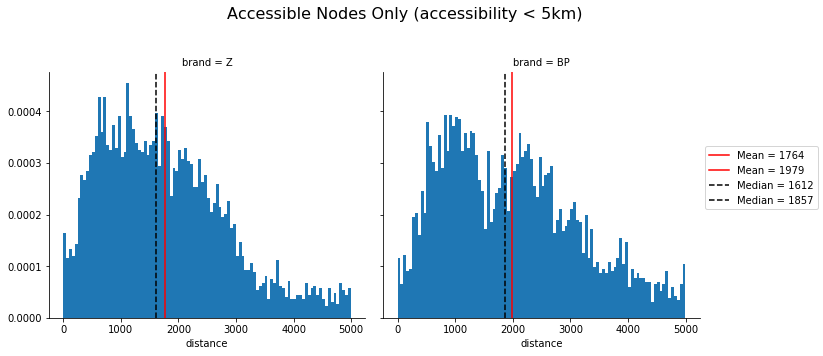

Geospatial proximity analysis with fuel stations - accessibility
Part 3: customer accessibility
The previous two parts Part 1 and Part 2 retrieved open spatial data for plotting onto a map from OpenStreetMap; and abstracted spatial networks to networks for connectivity analyses.
Accessibility analysis
The previous analyses have only considered the fuel stations and quantify implicit interactions (via road distance) between them. But we get the real benefit of spatial analyses when we consider interactions between the fuel stations and other entities - from humans to other businesses.
One type of interaction with general entities is accessibility. Simple accessibility analyses convert the base geography of the region into a point grid, and compute distances between every point and the POIS.
Accessibility is a core analysis in urban planning. Some examples here. There are even tools which score regions with scores based on accessibility e.g. WalkScore.
Calculating accessibility

Here, we consider accessibility as the driving distance in meters from each grid point (also referred to as nodes) to the nearest POIS: a fuel station. For a visual acessibility analysis we need to: - Break up the street map into a grid of points (II) - Calculate the distance from each point (within some radius) to the nearest POIS (III) - Visualise distance as a heatmap (IV)
All the above steps are carried out by the Python package Pandana. The second step has a few associated sub-steps. These are: - Download OSM data within the specified bounding box - Convert street map to a point grid. - Store points data in a convenient data structure: a Pandas dataframe
Accessibility to Z vs. BP
| Z | BP |
|---|---|
|  |  |
The accessibility heatmaps indicate that both Z and BP have reasonable coverage in the Wellington region. Most of the suburbs seem to be within reasonable (5km) driving distance of a Z / BP fuel station. The heatmaps also highlight some fine-grained details:
- Z has no coverage in Wanuiomata while BP does.
- Z doesn’t cover Karori.
- BP doesn’t cover the Southern suburbs - specifically those in the Miramar Peninsula (Miramar, Strathmore, Seatoun). Z has excellent coverage in this region.
- Neither Z nor BP cover Eastbourne.
- Z coverage in Lower Hutt is mainly along the main artery of the Hutt: Hutt Road + High Street.
- BP covers Eastern Hutt better in addition to covering along the artery line.
The northern peripheries of the map (e.g. Taita north on the Lower Hutt side and Churton Park north on the Porirua side are not be considered in this analysis as we’re missing the complete fuel station data for these areas.
The points made in the above section can be seen more clearly with differences between Z and BP accessibility. Since the accessibility analysis uses the same nodes for both stations, we can calculate a differential value of BP accessibility from Z acessibility: Z accessibibiity - BP accessibility. In other words, > For any given node, what is the differential distance to a BP station compared to a Z station?
This analysis shows the interplay between Z and BP accessibility within the Wellington region, with accessibility now spanning both positive and negative values. The heatmap colours map positive values to nodes where Z stations are further away than BP; negative colours to nodes where Z stations are closer than BP.
A summary of the differential heatmap colours:
- Red and organge regions indicate better BP coverage (i.e. BP station is closer).
- Blue and green indicate better Z coverage (i.e. Z station is closer).
- Yellow tones indicate good coverage for both stations (i.e. equivalent distance to both Z and BP station).

The convenience of the common accessibility nodes can help us approximate an average accessibility to a Z / BP station for the Wellington region. The histograms plot the distance to the nearest Z / BP station. The mean and median show two quite interesting points: - There are more nodes that are more than 5km from a Z station. These “inaccessible” nodes increase the mean accessibility to a Z station for the region. The difference in the mean accessibility of Z and BP are fairly close. Z stations are only closer by 100 m. - If the inaccessible nodes are not considered as strongly (i.e. using the median), Z stations are more accessible by 200m.
While Z does better for the covered regions, the regions that aren’t covered by Z reduce the average accessibility.

We can explicitly only plot the nodes that fall within the accessible areas. Z accessibility is 200 m better than BP for both mean and median averages. The previous plot also showed some indication of a bimodal distribution in accessibility for BP. Increasing the number of bins shows that there is likely a bimodal accessibility distribution for BP (similar result in an earlier section). But, we’d need to think a little deeper as to why this might be the case.

Conclusions
The key business question to be answered in this series was: > Does Z have better coverage than their competitor(s) in Wellington? If so, how?
Through a variety of different spatial analyses, we can quantify some aspects of this question:
- Z stations are closer together on average, compared to BP.
- Z stations in Wellington City are closely-knit. A Z station in Wellington City has 6.5 Z stations within 10 km. That’s 2 more stations than the average for the Lower Hutt sub-network (component).
- BP have more physical stations in Lower Hutt.
- Average accessibility to Z stations is better than BP stations.
- Both Z and BP vie for coverage in the Wellington region - doing well in some areas and poorly in others:
- Z has exclusive coverage in the Miramar Peninsula and North Western suburbs (Ngaio, Crofton Downs). Petone and the Hutt along the main Hutt Road / High Street artery of Lower Hutt are also better served by Z.
- BP exclusively covers Wainuiomata and Karori. Parts of the Southern suburbs (like Island Bay) are also better covered by BP.
Given the above findings, we can tentatively answer the business question > Z stations have better coverage in Wellington compared to BP.
However, this tentative conclusion needs more work to become a substantive one. Suggestions in the following section.
Future Work
Some immediate follow up work can include:
- A more complete analysis. Since Z is not the only brand of the Z entity, we need to include Caltex Stations as well.
- Combining population density with accessibility. Currently, accessibility analysis considers every node to contain the same number of people. This is clearly untrue. A better understanding of the weaknesses in Z’s coverage would need to know which high population density nodes have poor access to Z stations.